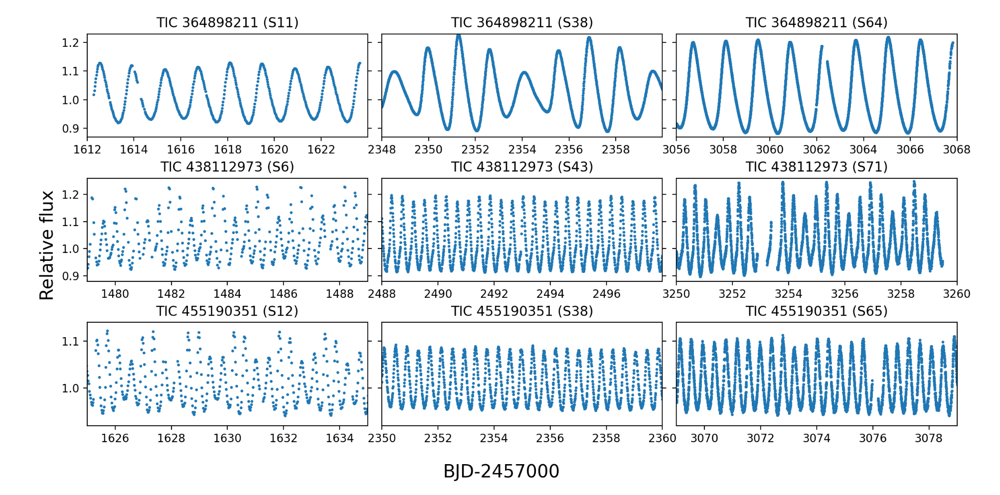
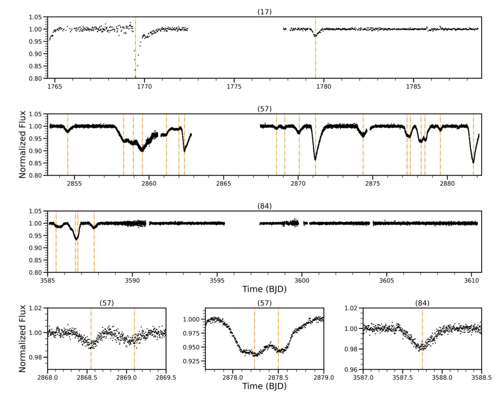

Welcome TESS followers to our latest news bulletin!
This week, we are looking at three recent papers from the archive. Enjoy!
First, we highlight a deep exploration of classical Cepheid variables with TESS. These stars serve as crucial distance indicators, making them fundamental tools for stellar, galactic, and extragalactic astrophysics, and also provide key insights into stellar evolution and the physics of stellar pulsation. While most Cepheids pulsate in simple radial modes, recent discoveries have revealed complex low-amplitude additional periodicities that challenge current theoretical models.
Next, we outline a paper presenting the discovery of the transiting exocomets in RZ Psc. This is only the second known such system, and as such provides unique insights into the architecture and evolution of planetary systems beyond our own. Exocomets represent direct observational evidence of planetesimals in extrasolar systems, offering a window into the collisional processes that shape debris disks and influence planet formation.
The third paper reports the discovery and characterization of TOI-238 b, a transiting mini-Neptune with an orbital period of about 18 days. Such planets, with sizes between 1-4 Earth radii, seem to represent the most common type of planet in our Galaxy, yet their diverse compositions and atmospheric properties remain poorly understood. As such, TOI-238 b provides important insights into planetary formation and evolution processes that are absent from our own Solar system.
Exploring Low-Amplitude Variability in First Overtone Cepheids with TESS (Plachy et al. 2025) :
Plachy et al. (2025) present a detailed analysis of low-amplitude variability in first overtone radial model pulsations in classical Cepheids using TESS Full-Frame Image data up to Sector 81. To ensure their analysis is sensitive to days-long pulsations and intrinsic cycle-to-cycle variations, the author corrected the photometry only for the overall sector-by-sector brightness differences while avoiding in-sector detrending. Plachy et al. (2025)s analyzed 301 stars from an initial sample of 495 overtone Cepheids, with many excluded due to source brightness, insufficient observation cycles, and/or poor data quality associated with various sources of systematics. Altogether, Plachy et al. (2025) identified 127 stars exhibiting additional periodicities beyond their primary pulsation mode. The team discovered 17 stars displaying second radial overtone modes, confirming two targets previously suspected for such behaviour, with some showing dramatic amplitude variations between different observing sectors. Three of the targets, TIC 364898211 (MS Mus), TIC 438112973 (GM Ori), and TIC 455190351 (OGLE GD-CEP-1869) demonstrated particularly extreme changes, with amplitude ratios varying by factors of 10 to 30 between observations. The authors note that these variations likely indicate periodic amplitude modulation similar to the Blazhko effect observed in RR Lyrae stars. Another major finding of Plachy et al. (2025) was the identification of 83 stars in the ``0.61 group’’, characterized by additional signals with period ratios between 0.60 and 0.65 relative to the first overtone mode. Most of these stars also exhibited subharmonic frequencies at approximately half the 0.61 frequency. The study confirmed four previously known members of this group and discovered 79 new ones, representing a lower limit detection rate of ~8.7 percent among all overtone Cepheids in the Milky Way. Additionally, 15 stars were found to belong to the "0.68 group", with period ratios near 0.68, including 14 new discoveries. Six stars in this group showed both 0.61 and 0.68 signals simultaneously. The research revealed that these additional frequencies often vary significantly in amplitude and sometimes in frequency between observing sectors, challenging theoretical models that predict coherent signals. The authors also identified 22 stars with periodicities outside the two established groups described above, with 11 potentially representing direct detections of non-radial pulsation modes. Thanks to TESS, Plachy et al. (2025) were able to identify amplitude and frequency modulations in classical Cepheids within individual sectors, suggesting that low-amplitude variability in Cepheids may be more common and complex than anticipated.
TESS Discovers a Second System of Transiting Exocomets in the Extreme Debris Disk of RZ Psc (Gibson et al. 2025) :
Gibson et al. (2025) present the discovery of 24 transiting exocomets in the RZ Psc system using data from TESS. This is only the second system, after β Pictoris, where enough exocomets have been detected to analyze their size distribution. RZ Psc is a young (~20-50 Myr) Sun-like star with an estimated spectral type of K0V, mass of 1 MSun, and radius of 1.1 RSun, hosting a prominent debris disk. TESS observed the target across three sectors, enabling the detection of transit events with absorption depths ranging from 1-20%. Based on these, the authors estimated an exocomet transit rate of 0.40 events per day, roughly double the rate inferred for β Pictoris (~ 0.19 events per day). Gibson et al. (2025) calculated exocomet radii ranging from 0.77 to 7.31 kilometers using two independent methods, such that the size distribution follows a broken power-law pattern similar to Kuiper Belt Objects with a break at approximately 2.5 kilometers. Above the break, the authors measured a power-law slope of 2.32±0.12, while below the break the best-fit slope was 0.11±0.04, and note that the broken power-law structure matches theoretical predictions for collisional cascades in young debris disk systems. The RZ Psc system shows evidence of high dynamical activity, with higher exocomet detection rates than β Pictoris, likely due to strong perturbations from a 0.12 solar mass companion with a projected separation of 22 AU from the primary star. This is further supported by the system’s youth and extreme debris disk classification, characterized by high fractional dust luminosity and significant infrared variability. Gibson et al. (2025) note that most of the detected events were multi-cometary transits, with only 8 single comet transits identified among the 24 total detections. Additionally, extrapolating from the estimated exocomet rate of RZ Psc, the authors argue that the proposed Early eVolution Explorer NASA mission could detect ~590 exocomets in optical bands across ~70 young stellar systems, with about 120 simultaneous detections across ultraviolet, optical, and near-infrared wavelengths. The study demonstrates that systematic surveys of young debris disk systems with TESS can significantly advance our understanding of planetesimal populations and the early evolution of planetary systems.
TOI-283 b: A transiting mini-Neptune in a 17.6-day orbit discovered with TESS and ESPRESSO (Murgas et al. 2025) :
Murgas et al. (2025) present the discovery and characterization of TOI-283 b, a transiting mini-Neptune orbiting a relatively bright (V = 10.4 mag) K-type star located 82.4 parsecs away. TOI-283 b was initially identified as a planet candidate in TESS short cadence photometry, where it produced dozens of prominent transits across 36 sectors of data. To study the system in depth, the authors combined the TESS data with high-resolution spectroscopic observations from ESPRESSO, collected over nearly 1200 days. Their analysis indicated that the host star is slightly smaller and cooler than our Sun, with an effective temperature of ~5200 K, a mass of ~0.80 Solar masses, a radius of ~0.85 Solar radii, a rotation period of about 30 days, and metallicity of about -0.09. TOI-283 b completes an orbit every 17.617 days at a semi-major axis of ~0.12 AU. Their best-fit model shows that the planet has a radius of ~2.34 Earth radii and a mass of ~6.5 Earth masses, corresponding to a bulk density of ~2.81 grams per cubic centimeter. These place TOI-283 b squarely in the sub-Neptune category, with a size that roughly places it above the radius gap that separates super-Earths from mini-Neptunes. Murgas et al. (2025) estimated that the planet receives approximately 30 times more stellar radiation than Earth and has an estimated equilibrium temperature of around 660 K. Their joint analysis revealed no significant transit timing variations, suggesting the absence of additional massive planets in the system. However, the authors note that the radial velocity data showed evidence of a long-term trend with a period of approximately 1356 days and a semi-amplitude of ~9.4 m/s, which could indicate either stellar activity cycles or an additional planetary companion. Their composition modeling suggests that TOI-283 b likely contains a substantial amount of water and may possess a substantial hydrogen-helium atmosphere. Utilizing interior structure models, Murgas et al. (2025) estimate a relative core size of about 31%, mantle size of ~22%, 31% water layer, and about 12% of gaseous envelope. Capitalizing on TESS data, the authors’ discovery of TOI-283 b adds to the relatively small sample of long-period sub-Neptunes around bright stars that are suitable for atmospheric characterization studies.

Fig. 1: Taken from Plavchy et al. (2025). TESS data for three Cepheids exhibiting pronounced amplitude ratio modulations.

Fig. 2: Taken from Gibson et al. (2025). TESS photometry of RZ Psc, the second known system exhibiting a sufficient number of exocomets transits to constrain the underlying size distribution.

Fig. 3: Taken from Murgas et al. (2025). Left panel: Mass-radius diagram highlighting the position of the newly-discovered TOI-283 b (red star symbol). Right panel: Corresponding period-radius distribution for planets smaller than 4 Earth radii and K-type stellar hosts.